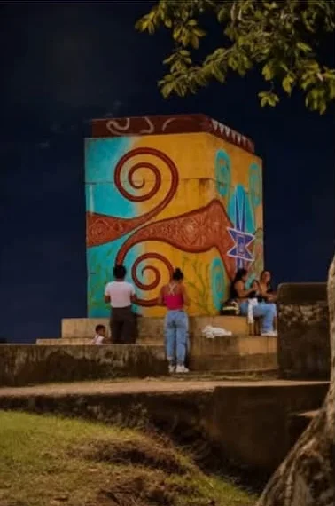
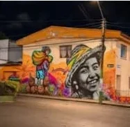
Culturalmente9 de noviembre
Hay atardeceres que solo Popayán sabe regalar.
CulturaNaturalezaTurismoGastronomía
Historias del Cauca y de Colombia contadas con imágenes: sus pueblos, sus paisajes, su gente y sus sabores.
Contamos el Cauca como se vive: con su cultura, su naturaleza y su sazón.
Somos una página enfocada en el mundo cultural, ambiental y gastronómico. Recorremos el Cauca para mostrar sus lugares, su historia, sus tradiciones y su cocina, y compartirlos con una comunidad que crece cada día.
Cada publicación es una invitación a conocer, cuidar y disfrutar lo nuestro.
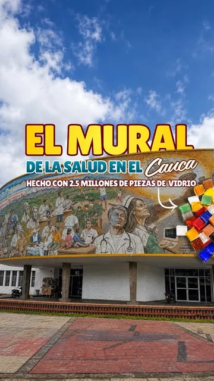
01Tradiciones, arte, historia y personajes que nos hacen quienes somos.
Volcanes, páramos, ríos y paisajes que vale la pena cuidar.
Pueblos y rincones del Cauca para visitar al menos una vez.
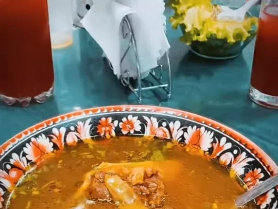
04Almuerzos con sazón, recetas de casa y sabores de nuestras raíces.
Los reels más vistos de la página. Toca cualquiera para verlo en Facebook.
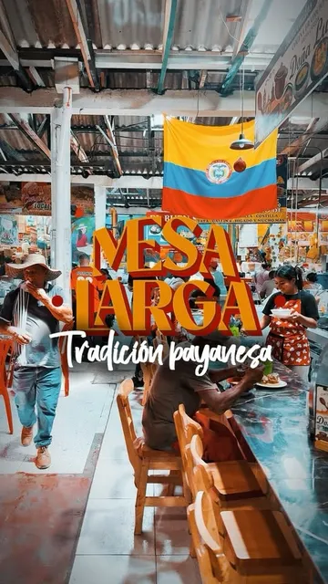
14 mil reproducciones Mesa Larga, tradición payanesa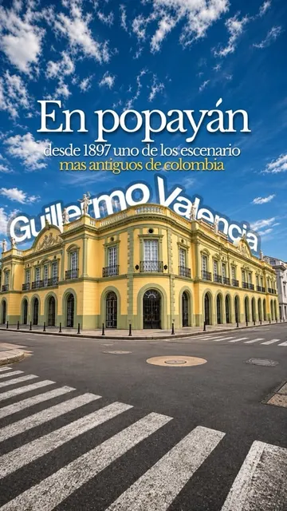
11 mil reproducciones Teatro Guillermo Valencia, Popayán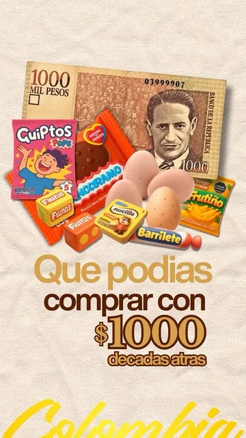
11 mil reproducciones Qué podías comprar con mil pesos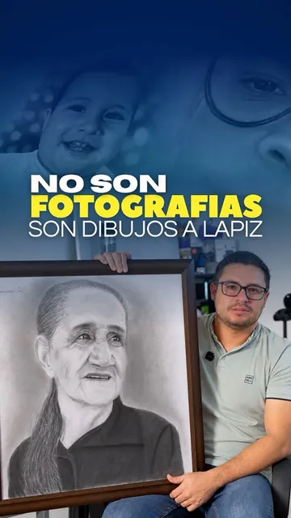
9,1 mil reproducciones No son fotografías, son dibujos a lápiz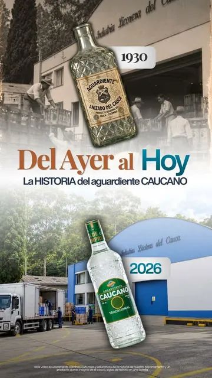
4,2 mil reproducciones Del ayer al hoy: la historia del aguardiente caucano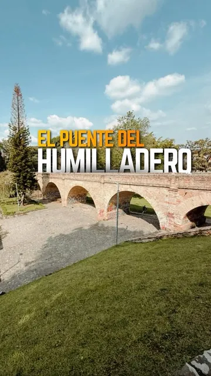
2,8 mil reproducciones El Puente del Humilladero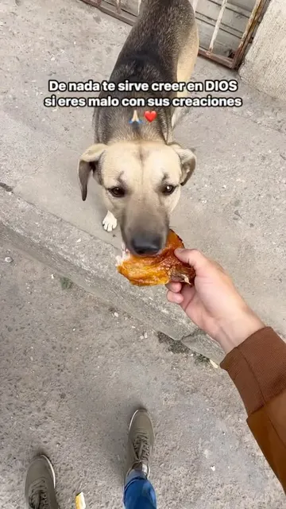
2,4 mil reproducciones De nada te sirve creer en Dios si eres malo con sus creaciones

Hay atardeceres que solo Popayán sabe regalar.
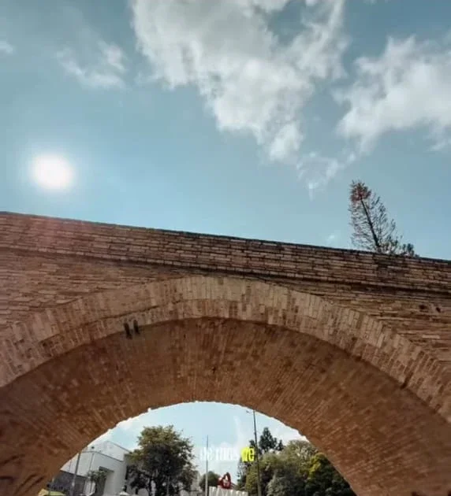
¿Cómo construyeron esta maravilla hace más de un siglo?
De esos almuerzos hechos con cariño, con buena sazón y con el sabor de nuestras tradiciones.
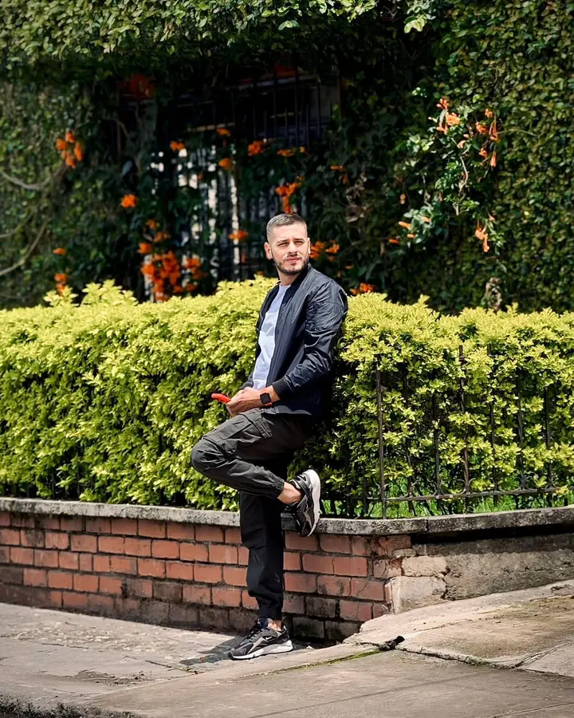
Fotógrafo y diseñador. Recorre el Cauca con la cámara para capturar sus paisajes, su gente, su arquitectura y su gastronomía, y convierte cada historia en imágenes, diseños y reels que conectan con miles de personas.
Si tienes un destino, un restaurante, una marca o un evento que merece ser contado, él puede ayudarte a mostrarlo.
Fotografía, diseño y contenido con la mirada de quien conoce el territorio.
Imágenes que muestran lo mejor de cada lugar y cada momento.
Piezas con identidad, pensadas para destacar en redes.
Historias cortas que la gente quiere ver y compartir.
Da a conocer tu negocio, destino o evento ante una comunidad de 116 mil seguidores.
Escríbele a Victor Hugo por WhatsApp o llámalo. Con gusto te cuenta cómo trabajar juntos.
Llama o escribe304 128 7841Completa el mensaje y se abrirá WhatsApp listo para enviar.